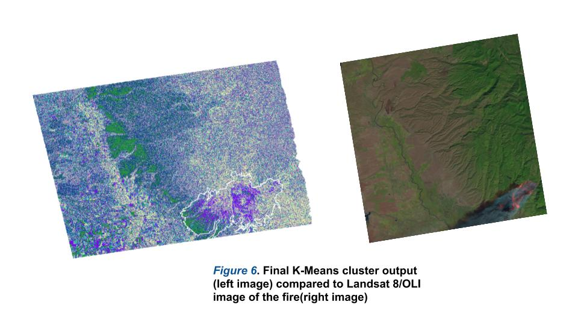

Coherence Change Project
Abstract
On the day of November 8th, 2018, Paradise Falls, California experienced one of the costliest and deadliest wildfires in modern history. The fire was fully contained by the 25th of November, but only after losing close to 100 lives, with hundreds of structures including homes and businesses completely destroyed. The objective of the analysis was to generalize the the effects that the wildfire had on the landscape, specifically looking at coherence through four different subsequent image pairs. The severity of coherence was also generalized into cluster groups with K -means clustering. The results were quite telling, as it was apparent where most of the change had occurred.
Methods
The analysis examined detection change by looking at coherence within the images, also known as Coherence Change Detection (CCD). For this analysis to be compatible for change detection, the coherence images were paired up, making the analysis focus on four pairs (seen down below). Although a full-scale CCD was not conducted, the anlaysis by just examining the values changing throughout the images are still valuable. Furtheomore, coherence change was generalzied using a K-means clustering method to see the natural grouping of values. Since wildfires causes huge disturbances on vegetation, the change in coherence should be apparent. The outlines area in white is the final fire perimeter boundary
Results
The following images show the coherence throughout the image pair outlined from table 2 (fig 3a-3d). These have been guided with the final fire boundary, which was reported to be 100% contained by the 25th of November, 17 days later after the first day of the fire. Aside from the high coherence that is occurring on the base line of the mountain range, it is apparent that coherence increases well within the fire boundary, even continuing after full containment of the fire. To further illustrate the severity of increased coherence, RGB composite images were generated to show the dominance in the December dates (Figure 4-5).

Change between both dates


Furthermore, as a means to generalize and validate the natural clustering of the change in coherence values, a K-means clustering unsupervised method was applied (Figure 6). As expected, based on where most of the coherence change was within the 4 images, the most abundant clusters are located on the baseline of the mountain range in green, and where the fire occurred, within the fire boundary. K-means further illustrates that as the values in coherence create natural groups.
K Means Clustering
Conclusion
Overall, the analysis of the wildfire was only a snapshot of the full effects that Paradise, California experienced. One of the few limitations of this analysis was the ability to gather matched images from days further out from the fire. Within the ASF website, images passing January of 2019 were shown to not be geometrically aligned at all with the images from this analysis. All in all, a potential next step for this analysis is gathering images that go far out to the spring and measuring the return in vegetation/alpine trees compared to previous years and seek for significant differences in backscattering there. Also, due to how devasting the fire was to human life, it would also be interesting and worthy of looking at the changes that occurred in the nearby towns, such as Chico and Paradise. Perhaps a shift in street networks had to be implemented in order to help with evacuations routes and shelters as a means to prepare for the next one.